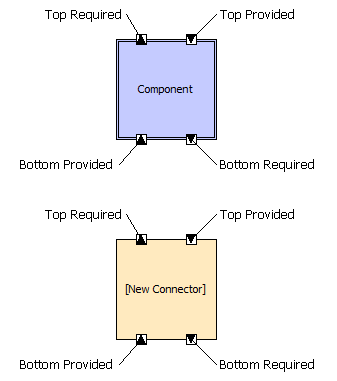
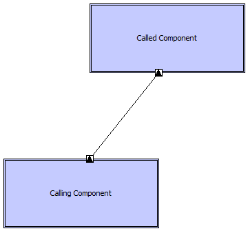
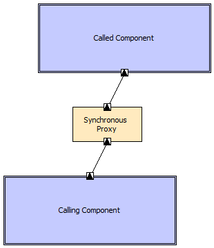
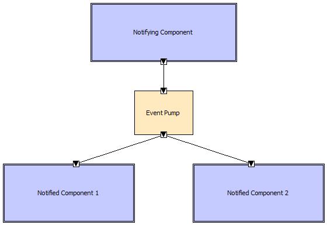
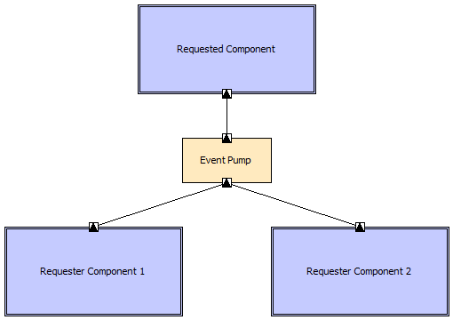
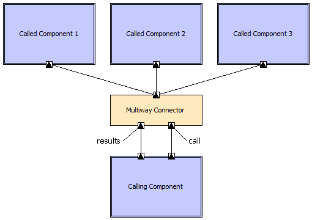

ArchStudio 4 is built in an architectural style called Myx. The Myx style, and how it is used to build plug-ins like ArchStudio, is described here. This document supersedes earlier versions of the style description, such as the Myx whitepaper
We define an architectural style as follows:
An architectural style is a set of constraints put on development to elicit beneficial properties.
That is, an architectural style provides a set of rules, or constraints, that limit how the application may be built, how its components and connectors may communicate, and so on. While these constraints reduce the freedom of system implementers, they also help implementers to build systems with well-known properties. To use an analogy from building architecture, buildings constructed in the Swiss Chalet style are constrained to have steep roofs. This constraint elicits a particular beneficial property: snow will slide off the roof, rather than building up crushing the structure.
Similarly, the Myx style is a set of rules for composing the components and connectors of an application like ArchStudio. It provides patterns of composition for synchronous and asynchronous interactions among components. It also provides rules for what kinds of assumptions components may make about each other, ensuring a directed/layered ordering of dependencies among components.
By adhering to these constraints, Myx applications (including ArchStudio) recieve certain benefits. Components remain relatively independent from one another, and it is easy to reuse components. Components only communicate through explicit interfaces, so it is easy to rewire components in different configurations without recoding the components themselves. Explicit mechanisms are present to permit architectural dynamism—the ability to change the architectural structure at runtime—in specific places where the architect chooses.
There are five key architectural elements in a Myx architecture:
The default form for an interface in Myx is a set of one or more functions (also known as methods or procedures) that can be called. However, different implementations of Myx systems may use different forms of interfaces.
Every interface is designated as either a provided or a required interface. A provided interface is used as the interface to a service provided by its brick. Provided interfaces are the interfaces that are invoked by other bricks. Required interfaces are used to invoke services provided by other bricks.
All communication among Myx bricks must occur through interfaces. Other forms of communication (direct manipulation through pointers or references, communication through the filesystem, and so on) are prohibited.
To satisfy this constraint and to promote loose coupling, all interfaces on Myx bricks must be remotable. This means that all data passed across the interface—parameter values, return values, and exceptions—must be serializable. Once data has passed across a brick boundary, it may not be manipulated by other bricks through the use of latent pointers or references. If objects are passed across brick boundaries, only the brick that last received the object may invoke its methods. Effectively, this constraint means that components must operate as if they occupy separate memory spaces.
Links have exactly two endpoints. Each link connects exactly one required interface to one provided interface.
A provided interface may have zero or more links to required interfaces. A required interface may have zero or more links to provided interfaces.
All bricks have two "domains" called top and bottom. All interfaces on a brick must be assigned to one of these domains. Both provided and required interfaces can be on the brick's top or bottom domain. Links are used to connect an interface on one brick's top domain to an interface on another brick's bottom domain. This is intended to induce layering in Myx architectures.
If a brick B2 is connected to an interface on the bottom domain of a brick B1, then B2 is below B1. Conversely, if a brick B2 is connected to an interface on the top domain of B1, then B2 is above B1. 'Above' and 'below' relationships are transitive: if B1 is above B2, and B2 is above B3, then B1 is above B3, and vice-versa.
Cycles are not permitted. That is, a brick may never be above or below itself. A link may not connect a brick to itself.
A brick may make assumptions about services provided by other bricks above it, but may not make assumptions about services provided by other bricks below it. That is, a brick may fail if adequate services are not provided above it, but a brick must not fail if no services are provided below it. If a brick requires a service provided above it, but that service is not available or not connected, bricks should make an effort to degrade gracefully. This is known as the substrate independence constraint.
Synchronous invocations between components are permitted upward only. In a synchronous invocation, the invoking brick waits for the invocation to complete before continuing. In general, this is achieved through the use of an ordinary function call.
Asynchronous invocations are permitted both upward and downward. In an asynchronous invocation, the invoking brick continues processing after initiating the invocation, which proceeds concurrently in a separate thread of control. In general, this is implemented through the use of an intermediate event-pump connector or equivalent. The restriction that all downward component-to-component invocations be asynchronous promotes loose coupling between layers, such that the substrate independence constraint is honored. Additionally, it helps to prevent deadlocks.
Applications have at least one main thread of control. Individual bricks can create and maintain new threads as necessary. In general, asynchronous connectors such as event pumps create at least one new thread of control.
The Myx style is designed to support selective dynamism. That is, the architect is permitted to determine when and whether a component may be dynamically added to or removed from the architecture, and when and whether a link may be dynamically added or removed from the architecture. In general, a brick may be implemented so it supports dynamic addition and removal and/or dynamic linking and unlinking on its interfaces. If two connected bricks are implemented as non-dynamic, but dynamism is needed between them, dynamic proxy connectors can be constructed to add some dynamism support.
As noted above, architectural styles are constructed to elicit particular benefits in systems constructed according to the style. Some of the benefits of using Myx are:
The constraints above induce several common patterns in Myx architectures. We attempt to document some of them here to assist architects in composing applications.

Here, we will use a graphical notation to depict the composition patterns. The above shows the elements used. Both a component (double-bordered box) and connector (single-bordered box) are shown; these are also displayed in different colors for more distinction. Both top and bottom provided and required interfaces are labeled. The domain of an interface is indicated by its placement on the box (top or bottom edge). Provided interfaces are depicted with a triangle pointing inward toward the brick, and required interfaces are depicted with a triangle pointing outward.

This is a basic upward synchronous procedure call. Here, a required interface on the calling component is connected directly to a provided interface on the called component. In general, these calls are implemented as ordinary procedure calls: the calling component passes its thread of control to the called component during invocation, the called component completes its invocation and returns control to the calling component. Data is passed from the calling to the called component (in the form of call parameters) and returned from the called to the calling component (in the form of return values or exceptions).

This is also a synchronous upward call, but with a proxy interposed. In general, proxies add some semantics to the interconnection or the invocations between bricks. For example, perhaps the calling and called components are implemented such that dynamic linking to their interfaces is not permitted. If the proxy connector is implemented in such a way that dynamic linking to its interfaces IS permitted, then the link between the calling and called components can be made dyamic through the use of this pattern. The intermediate proxy may also perform services such as data format transformation, logging, debugging, and so on.

This is the most common downward notification pattern seen in Myx architectures. Here, the notifying component emits notifications to the notified components, perhaps of an internal state change or externally sensed event. As per the Myx rules, because these notifications are in the downward direction between components, they must be asynchronous. This is achieved through the interposition of an event pump connector. An event pump connector has simple semantics: it receives a message on its provided interface and, in a separate thread, forwards that message to all bricks connected to its required interrface.
Note that the downward calls between the components and connectors are likely implemented as synchronous procedure calls: this does not violate the Myx style rules because these are component-to-connector connections. The component-to-component notification semantics are still asynchronous, with the asynchrony provided by the interposed event pump.

This pattern mirrors the asynchronous notification pattern. Here, the event pump performs the same function, but the asynchronous notifications are traveling upward rather than downward. After the event pump receives the request from either requester, control is returned immediately to the requester. Then, the request is forwarded to the requested component in a separate thread of control by the event pump.

This is an example of a more advanced composition pattern in Myx. Here, the three called components (1, 2, and 3) all expose the same kind of provided interface. The calling component wants to invoke the same operation on all three components simultaneously. This is accomplished through the use of a multiway call connector. The calling component invokes the operation once, on the single multiway connector. The connector then invokes the corresponding operation on all three called components. This may happen serially, in a single thread, or in parallel, in multiple threads. What happens next depends on the implementation of the multiway connector:
null is returned). Later, the calling component
can call the separate 'results' interface to receive results. The results interface
may expose functions that query whether results are ready yet, return partial results,
etc.Building applications in the Myx style requires adhering to the constraints of the style. This can be difficult in a language like Java that does not necessarily have implementation support for all Myx concepts. To bridge this gap, we have implemented an architecture framework called myx.fw that can be used to implement Myx applications in Java. It is currently distributed as an integrated part of ArchStudio, but is also available as a separate package.
TBD